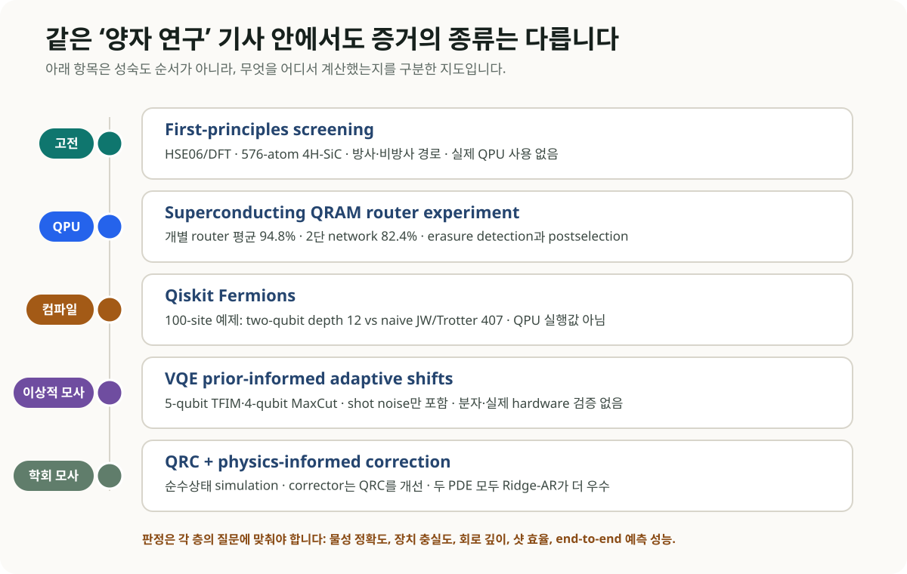
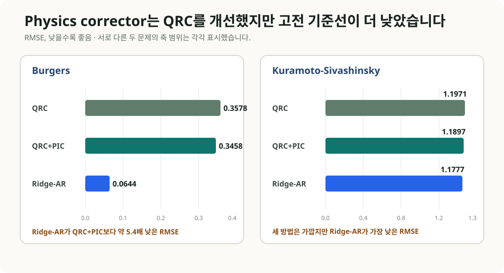

양자컴퓨팅 소식을 한꺼번에 읽다 보면 서로 전혀 다른 종류의 결과가 같은 문장 안에 놓입니다. 4H-SiC 결함을 계산한 first-principles 연구, 초전도 프로세서에서 구현한 QRAM router, 100-site 회로를 줄인 compiler, VQE optimizer, 양자 reservoir simulation이 모두 ’양자’라는 이름 아래 등장합니다. 어떤 하드웨어에서 무엇을 실제로 계산했는지부터 나누면, 성취와 미입증 범위가 훨씬 분명해집니다.
먼저 판정표를 세워보자
| 업데이트 | 실제 플랫폼 | 확인된 결과 | 아직 확인되지 않은 것 |
|---|---|---|---|
| 4H-SiC color-center screening | 고전 HSE06/DFT | 방사·비방사 경로를 함께 평가하고 네 후보 제시 | QPU 계산, 실험 확정, 완전한 multimode line shape |
| QRAM router | 초전도 QPU | erasure 검출·postselection 조건에서 개별 router 평균 94.8%, 2단 network 82.4% fidelity | 대규모 QRAM, 대용량 데이터 적재, QML end-to-end 가속 |
| Qiskit Fermions | compiler·고전 소프트웨어 | 100-site 예제에서 compiled two-qubit depth 12 | 100-site 실제 QPU 정확도·샷·실행시간 |
| VQE PAS | 이상적 고전 시뮬레이션 | shot budget에 따른 parameter shift 선택 개선 | 분자 Hamiltonian, hardware noise·drift, 실제 장치 성능 |
| QRC+PIC | 순수상태 고전 시뮬레이션 | physics corrector가 QRC 자체를 소폭 개선 | Ridge-AR 대비 우위, 실제 QPU 가속 |

그림 2. 이 도식은 성숙도 순서를 표시하지 않습니다. 물성 정확도, 장치 충실도, 회로 깊이, 샷 효율, 예측 성능처럼 서로 다른 증거 유형을 각자 맞는 기준으로 평가해야 합니다.
1. SiC 결함 계산: 양자소재 연구지만 계산은 고전 DFT다
2026년 8월 25일 npj Computational Materials에 공개된 연구는 4H-SiC에서 광학적으로 주소 지정 가능한 spin-qubit 결함을 고르는 first-principles framework를 제시했습니다. VASP와 HSE06을 이용한 576-atom supercell 계산으로 방사 전이, phonon sideband, 비방사 전이를 한 workflow에 넣었습니다. 실제 QPU와 양자 알고리즘은 사용하지 않았습니다.
연구진은 NCVSi-1, OCVSi0, FCVSi+1, ClCVSi+1를 유망 후보로 제시했습니다. zero-phonon-line 효율은 각각 8.7%, 11%, 7.9%, 3.4%였습니다. OCVSi0와 ClCVSi+1의 Debye-Waller factor는 10.1%와 3.0%였고, 기존 multimode 계산값 13.4%와 2.12%에 비교했습니다.
이 속도는 의도적인 근사에서 나옵니다. 논문은 1D effective phonon mode, constant electron-phonon matrix element, three-point approximation을 사용했습니다. 후보 선별에는 효율적이지만 상세 phonon line shape와 band-edge transition의 finite-size correction까지 대체하지는 못합니다.
OLED 연구에 바로 가져올 부분
인광·TADF 후보도 수직 여기 에너지 하나만으로 순위를 정하기 어렵습니다. 방사율, 비방사 경로, vibronic coupling이 서로 다른 방향으로 움직일 수 있기 때문입니다. 넓은 chemical space에서는 저비용 근사로 세 채널을 함께 선별하고, 소수 후보만 multimode·고정밀 계산과 spectroscopy로 검증하는 계층형 설계가 현실적입니다. 이번 SiC framework는 물질은 다르지만 workflow 설계 측면에서 직접 참고할 만합니다.
2. QRAM router: 오늘 항목 중 실제 QPU 실험은 이것이다
같은 날 Physical Review X에 공개된 연구는 superconducting processor에서 bucket-brigade QRAM의 coherent router를 구현했습니다. auxiliary qutrit level을 사용하는 transition composite gate를 설계했고, erasure를 검출해 postselection한 조건에서 세 개의 개별 router 평균 fidelity 94.8%, 2단 routing network 82.4%를 보고했습니다. 2단 network의 non-erasure 구성은 81.9%였습니다. 주소를 서로 떨어진 qutrit 상태에 부호화해 일부 오류를 erasure로 검출하는 구조입니다.
이 실험은 HHL·QML 문헌에서 자주 가정하는 coherent data routing의 하드웨어 구성요소를 실제 장치에서 보여줍니다. 성능 수치는 동시에 확장 부담도 드러냅니다. 개별 router에서 2단 network로 이동할 때 fidelity가 낮아졌고, postselection을 적용한 조건부 결과는 무조건부 성공률과 구분해야 합니다.
2단 router는 대규모 QRAM과 같지 않습니다. 대용량 고전 데이터를 coherent state로 적재하는 비용, 주소·memory cell 규모, 오류정정, 전체 알고리즘의 wall-clock은 아직 측정되지 않았습니다. 따라서 이 결과를 QML data-loading bottleneck 해결이나 학습 가속으로 일반화할 수 없습니다.
3. Qiskit Fermions: 도메인 구조를 compiler 후단까지 보존한다
IBM이 8월 24일 소개한 Qiskit Fermions는 fermionic operator와 circuit, 사용자 정의 fermion-to-qubit mapping, Qiskit transpiler 연동을 제공하는 open-source toolbox입니다. Pauli string으로 너무 일찍 변환하지 않고 fermionic locality와 parity 구조를 compilation 단계까지 유지하는 것이 설계의 중심입니다. ffsim 고전 시뮬레이터와 SQD addon도 연동합니다.
1D Fermi-Hubbard time evolution 예제에서 one-ancilla flow-set encoding은 4-100 site에 걸쳐 compiled two-qubit depth 12를 유지했습니다. 100 site의 naive Jordan-Wigner/Trotter compilation은 depth 407이었습니다. 두 수치는 compiler가 만든 회로의 깊이입니다. 실행시간과 성공확률은 이 비교에서 측정하지 않았으며, 실제 100-site QPU의 정확도, shots, routing overhead, wall-clock 결과도 아직 없습니다.
이 사례는 양자 소프트웨어 합성에서 도메인별 중간표현이 왜 중요한지 보여줍니다. 전자구조 연산을 일반 Pauli 연산으로 조기에 풀어버리면 compiler가 활용할 수 있는 보존량과 locality 정보가 줄어듭니다. Classiq 같은 synthesis 플랫폼을 평가할 때도 최종 gate count만 보는 대신, 어떤 구조 정보가 synthesis 입력에 남아 있었는지 확인해야 합니다.
4. VQE optimizer: 더 좋은 qubit와 별개로 샷 배치가 남는다
8월 21일 제출된 PAS(prior-informed adaptive shifts) 프리프린트는 Rotosolve/NFT 계열의 세 energy evaluation 위치를 조절합니다. minimizer에 대한 von Mises prior가 약할 때 shift를 2π/3 부근에 두고, 확신이 커질수록 π/2 쪽으로 이동시키는 방식입니다.
검증은 Qiskit ideal simulation에서 수행했습니다. 5-qubit transverse-field Ising model의 3-layer EfficientSU2 ansatz는 40 parameters, 4-qubit MaxCut의 5-layer hardware-efficient ansatz는 20 parameters였습니다. hardware noise와 drift는 없고 shot noise만 포함했습니다. 분자 Hamiltonian과 실제 QPU에서 아직 검증되지 않았지만, VQE 총비용에서 샷을 어느 parameter와 shift에 배분할지라는 별도 최적화 문제를 명시적으로 다룹니다.
5. QML에서 간단한 고전 기준선이 결론을 바꾼 사례
QNRL@WCCI 2026 accepted workshop paper는 quantum reservoir computing(QRC)으로 reduced-order PDE의 POD coefficients를 예측하고 physics-informed corrector(PIC)로 후처리했습니다. 순수상태 QRC 시뮬레이션이며 실제 QPU 실험은 아닙니다.
Kuramoto-Sivashinsky 문제에서 QRC의 RMSE는 1.1971, QRC+PIC는 1.1897로 개선됐습니다. Ridge-AR는 1.1777로 더 낮았습니다. Burgers 문제에서는 QRC 0.3578, QRC+PIC 0.3458, Ridge-AR 0.0644였습니다. 다섯 seed의 held-out trajectory 결과입니다.

그림 3. PIC는 QRC 자체를 개선했지만 두 문제 모두 Ridge-AR가 더 낮은 RMSE를 기록했습니다. 두 패널은 문제별 값의 차이를 보이기 위해 서로 다른 축 범위를 사용합니다.
산업 CFD에서 참고할 부분은 physics-informed correction을 독립 모듈로 두는 구조입니다. 현재 수치만으로는 양자 reservoir의 필요성이나 우위를 말하기 어렵습니다. Ridge/AR, operator learning, neural PDE solver를 같은 데이터·계산 예산으로 비교해야 합니다.
DFT·ML·OLED 업무에서 남길 평가 원장
오늘의 결과를 실제 연구 workflow에 넣으려면 각 계산층의 지표를 분리해 기록해야 합니다.
- 재료 screening: 에너지 오차와 함께 방사율, 비방사율, vibronic coupling, 실험 spectrum·lifetime을 기록합니다.
- 양자화학 회로: active space, mapping, compiled two-qubit depth, routing, fidelity, shots, total wall-clock을 함께 남깁니다.
- VQE: optimizer iteration 수, parameter별 shots, drift, error mitigation, classical optimization 비용을 모두 합산합니다.
- QML·PDE: 간단한 Ridge/AR부터 강한 operator-learning baseline까지 동일한 split과 compute budget으로 비교합니다.
- 주장의 층: 실제 QPU, noisy/ideal simulator, 고전 emulation, quantum-inspired 방법, compiler-only 결과를 표의 별도 열로 둡니다.
결론
8월 25일의 업데이트는 양자컴퓨팅이 하나의 단일 성능축으로 진전하지 않는다는 점을 보여줍니다. SiC 논문은 고전 first-principles screening을 정교하게 만들었고, QRAM 논문은 실제 QPU의 routing primitive를 시험했습니다. Qiskit Fermions는 회로 합성 전의 표현 계층을 개선했으며, PAS와 QRC+PIC는 각각 이상적 시뮬레이션과 워크숍 수준에서 알고리즘 아이디어를 평가했습니다.
OLED·재료 연구에서 당장 적용하기 좋은 부분은 방사·비방사 채널을 함께 거르는 screening 설계와 fermionic structure를 보존하는 compilation 원칙입니다. QRAM과 VQE/QML 결과는 향후 QPU 실험에서 비교할 지표를 구체화합니다. 같은 문제·정확도·총비용에서 강한 고전 기준선을 넘어섰는지는 별도의 검증으로 남겨야 합니다.
References
- Unified first-principles framework for predicting radiative and non-radiative processes in color centers, npj Computational Materials (2026-08-25)
- Demonstrating Coherent Quantum Routers for Bucket-Brigade Quantum Random Access Memory on a Superconducting Processor, Physical Review X (2026-08-25)
- IBM, Introducing Qiskit Fermions (2026-08-24)
- Fermionic circuit synthesis reference, arXiv:2512.11418
- Prior-Informed Adaptive Shifts for Sequential Minimal Optimization in VQE, arXiv:2608.21616
- Quantum Reservoir Computing with Physics-Informed Correction for Reduced-Order PDE Forecasting, arXiv:2608.23119
- Particle View of Many-Body Electronic Structure with Neural Network Wave Function, Physical Review X (2026-08-24)
작성자: 김현중. 작성 보조 및 퇴고: Codex 기반 GPT-5 계열 에이전트 하네스. 검증 기준일: 2026-08-26. 공개 LinkedIn 검색에서는 원 논문으로 역추적할 수 있는 새로운 고신호 기술 게시물을 확인하지 못했습니다.